壬午日
五九第九天
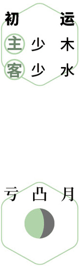
 迎春
迎春初春｜节气｜ 立春 ｜时间｜ 二月三日至二月十八日
今年立春需特别注意的健康问题：感冒咳嗽、头晕、脑卒中、女性月经不调
原料：荠菜、香菜、萝卜缨、芹菜、韭菜、蒜苗、油菜薹等。
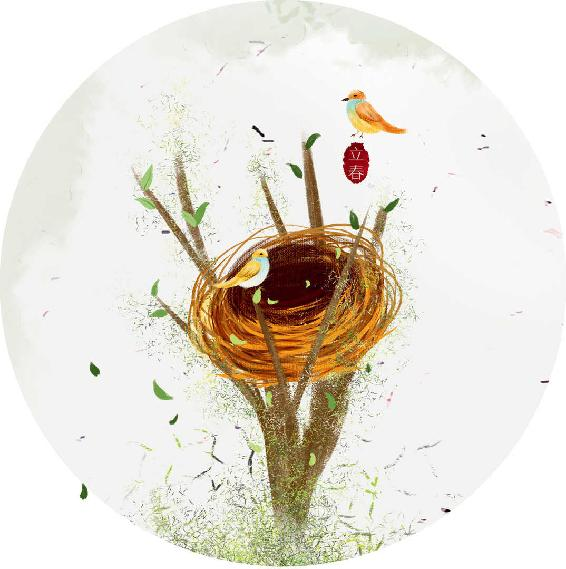
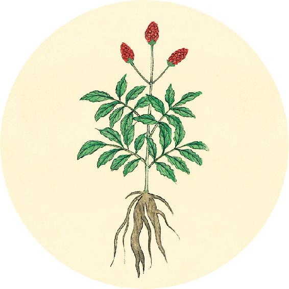
节气食方
春盘、春饼
原料：荠菜、香菜、萝卜缨、芹菜、韭菜、蒜苗、油菜薹等各种辛味蔬菜。今年吃春盘菜可以多吃些荠菜和葱叶。
做法：清炒，或焯水后（香菜不用焯水）凉拌，或用春饼卷着来吃。
故白当皮，赤当脉，青当筋，黄当肉，黑当骨。
——黄帝内经·素问·五脏生成论

迎春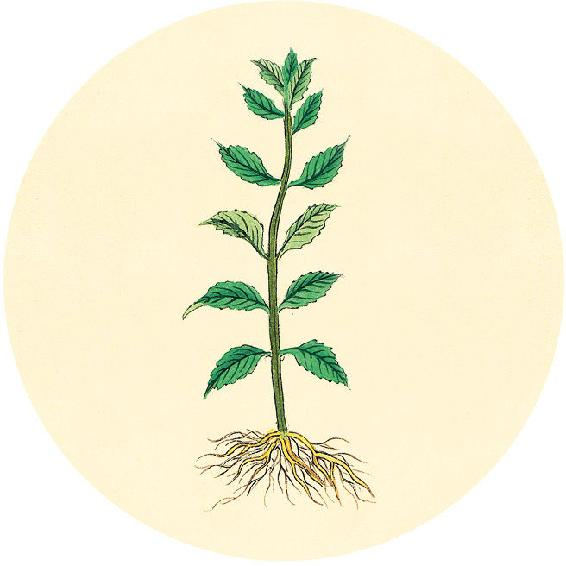
二十四节气茶养生
今年立春节气品茶推荐：鱼腥草茶。
想喝茶又怕睡不着的人可以用食材代茶饮。今年的二十四节气茶重点介绍代茶饮。喜饮六大茶（红茶、绿茶、白茶、黄茶、乌龙茶、黑茶）的人可以回顾去年养生日历的二十四节气茶。
抗雾霾茶
原料：鱼腥草茶15～30克（平时用量为15克，雾霾天时用量为30克）、陈皮1个。
做法：沸水冲泡。
功效：清肺止咳、解烟毒、消炎、抗感染，调理慢性咽炎、气管炎、肺炎、皮肤疱疹、全身各处炎症。
【释义】（因五色内合于五脏，而五脏外合于五体）所以白色外合于皮，赤色外合于脉，青色外合于筋，黄色外合于肉，黑色外合于骨。
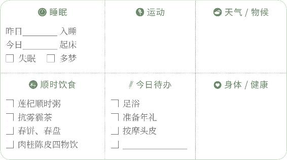
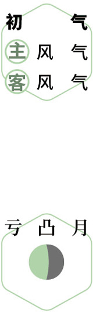
家宴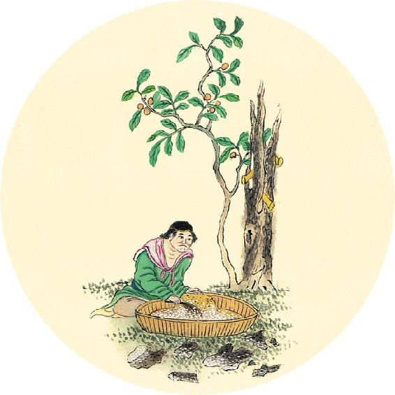
健康提示
立春节气的养生功课：抗病毒。
今年立春特殊的养生要点——
保养重点：心肺部位、小肠。
容易出现的问题：感冒咳嗽、头晕、脑卒中、女性月经不调。
今年立春节气，依然是脑卒中的危险期，注意防护。女性经前期综合征也容易比平时表现明显，可以提前调理。
诸脉者皆属（zhù，通“注”字）于目，诸髓者皆属于脑，诸筋者皆属于节，诸血者皆属于心，诸气者皆属于肺，此四肢八谿（xī）之朝夕（cháo xí，通“潮汐”）也。
——黄帝内经·素问·五脏生成论
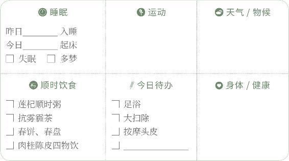
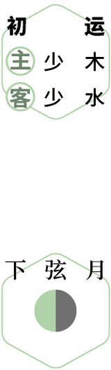
扫除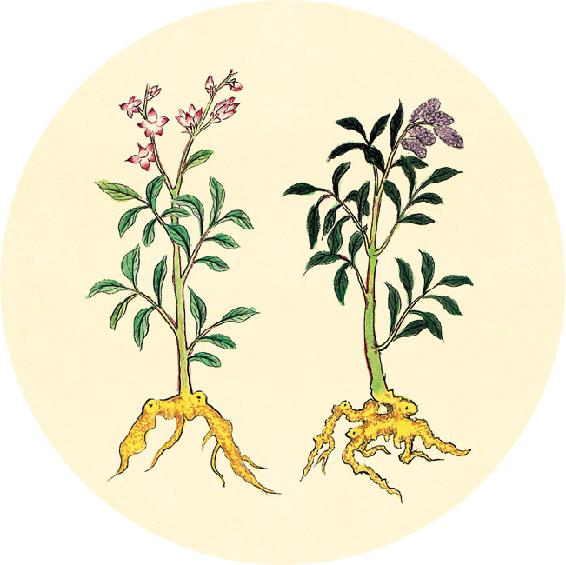
健康提示
从立春开始进入春天的第一个月。
本月养生关键词：生发阳气。
上半月养生重点：排毒。
下半月养生重点：防寒。
这是一个特殊的初春。这个月的天气，对全年比较重要。如果春气能顺利接替冬气，那么今年气候和人体健康会平顺一些，否则春分到小满易发传染病，冬季气候会反常。
【释义】人体的全身经脉，皆注于目；全身精髓，皆注于脑；全身之筋，皆注于骨节；全身之血，皆注于心；全身之气，皆注于肺。这是四肢八谿（指肘、腕、膝、踝关节，左右共八处）气血经脉流注的规律，就好像每日早晚的潮汐一样。
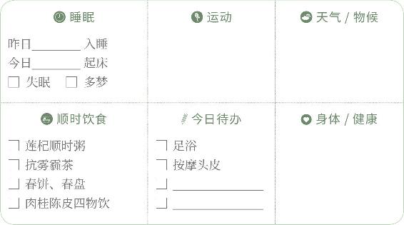
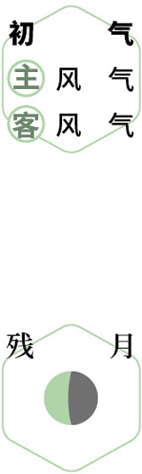
排浊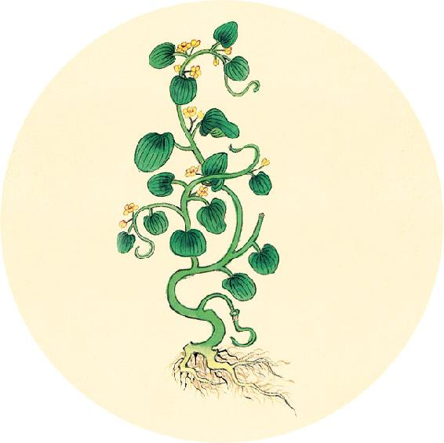
一候反思
女性生理期前是否有以下现象：
脾气急躁易怒 □ 是 □ 否
头痛 □ 是 □ 否
乳房胀痛 □ 是 □ 否
腰围变粗 □ 是 □ 否
感觉小腹胀 □ 是 □ 否
面色暗沉 □ 是 □ 否
有2个或以上答“是”，可以喝舒肝解郁茶（见3月22日）。坚持喝，还有养颜和淡斑的作用。
人卧血归于肝，目受血而能视，足受血而能步，掌受血而能握，指受血而能摄。
——黄帝内经·素问·五脏生成论

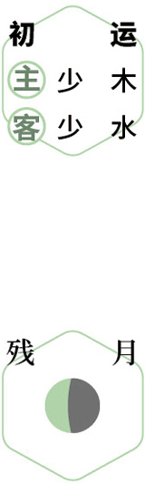
理气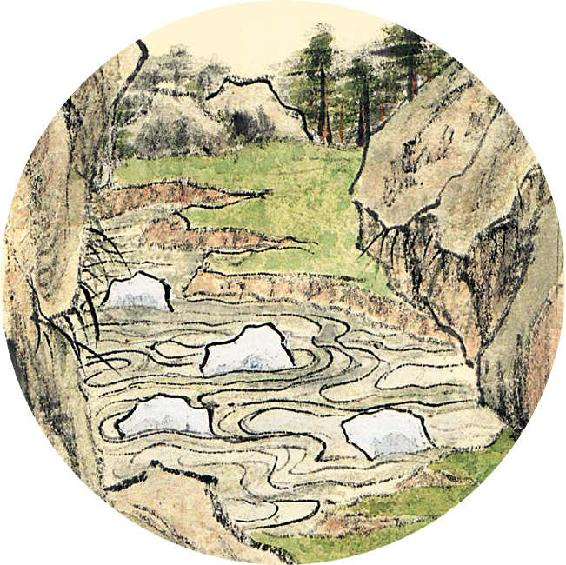
健康提示
雨水节气的食方，需要用到绿豆芽，可以提前准备好。初次发豆芽的人，可以翻到3月28日看注意事项。
用旧烧水壶发豆芽的小妙招：
1. 将绿豆放入水壶，倒入温开水，泡一夜，不用开盖，把水从壶嘴倒掉。
2. 每天早晚淋两次冷水，再倒掉水，保持豆子湿润。
3. 3～6天就可以吃了。
其他发豆芽的简单方法：
煎药罐发豆芽
矿泉水瓶发豆芽


【释义】人在睡眠时，血回流于肝，濡养身体各部，双目得血濡养而能视物，双足得血濡养而能行走，手掌得血濡养而能握物，手指得血濡养而能拿取。
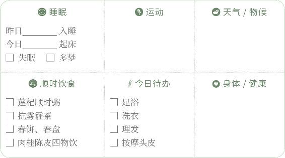
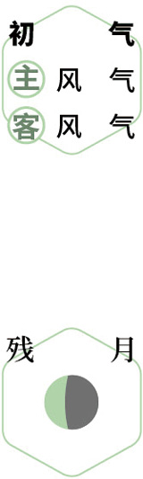
洗衣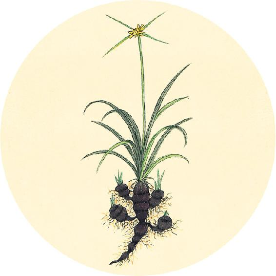
腊月二十八，呵笔写春联。
推荐两副老春联
辛盘椒颂献
丑腊历书新
天上四时春做首
人间五福寿为先
吃年夜饭时如果饮酒，可以提前准备好千杯不醉茶来解酒（做法见5月18日）。
卧出而风吹之，血凝于肤者为痹，凝于脉者为泣（sè，“泣”字为“涩”字的误写），凝于足者为厥。此三者，血行而不得反其空（读作kǒng，同“孔”字），故为痹厥也。
——黄帝内经·素问·五脏生成论
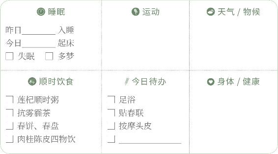
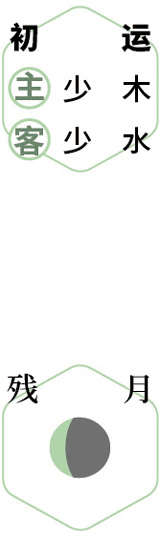
写福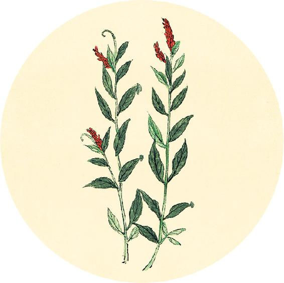
健康提示
辛丑岁全年保健粥：莲杞顺时粥（立春到立冬期间的配方，做法见2月11日）
原料（1人份）：炒荷叶6克，川陈皮1/2个，莲子12颗，枸杞子1把，茯苓10克，粥料60克（可参考1月13日腊八粥基础配方）。
加味：
脾虚、湿气重的人茯苓可以加量。
气血虚的人可以再加黄芪10克、党参10克。
特别瘦的人或是女性逢生理期，去掉荷叶，加红枣6个。
今年全家人可以常喝这道粥。
【释义】刚睡醒就外出受风，血受风寒而凝于肌肤的，会发生痹证；凝于经脉的，会使血行不畅；凝于足部的，会发生厥冷。这三种病证，都是由于血不能流回组织间隙的孔穴之处，所以造成痹厥。
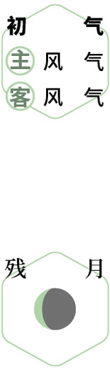
祈福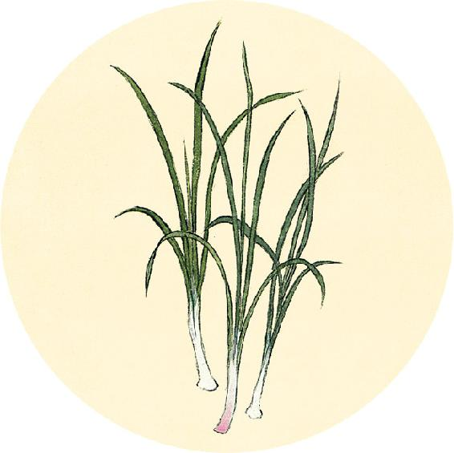
健康提示
辛丑岁全年保健粥：莲杞顺时粥
做法：
1. 将荷叶和陈皮用小茶包包起来，沸水冲泡10分钟，滤出茶汁。
2. 将莲子、茯苓、粥料放入陈皮荷叶茶汁中，浸泡1小时以上，开火煮成粥。
3. 粥熟起锅后，放入枸杞拌匀食用。
枸杞可以多放一些，调和荷叶的微苦味。
人有大谷十二分，小谿三百五十四名，少十二俞，此皆卫气所留止，邪气之所客也，针石缘而去之。
——黄帝内经·素问·五脏生成论
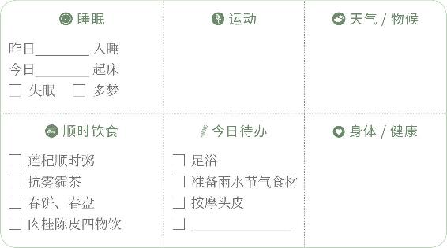
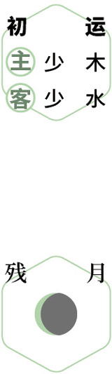
辞岁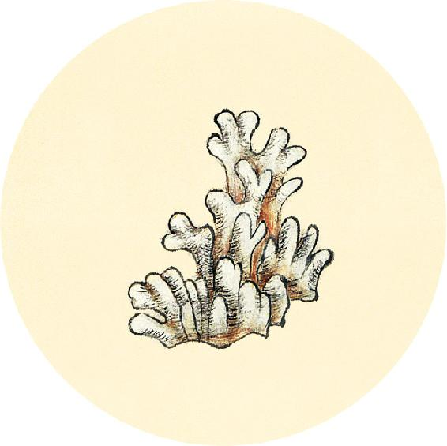
新年吉祥！
健康提示
按照历法，今天是辛丑岁的第一天，农历牛年。
根据《黄帝内经》，庚子岁的“金运”已于大寒节气前一天结束，辛丑岁的“水运”已经开始运行24天了。
按传统养生习惯，从大寒节气当天开始，今年出生的孩子，属相就可以算作是牛了。
在不同的年份出生，身体也会受到大环境和大气候不同的影响。
【释义】在人身上，有大谷（大关节：左右肩、肘、腕、髋、膝、踝关节）十二处，小谿（腧穴）三百五十四处，其中还没算十二关的数目，这些都是人体卫气所留止的地方，也是邪气滞留的地方，可循着这些部位用针石治疗，祛除病邪。
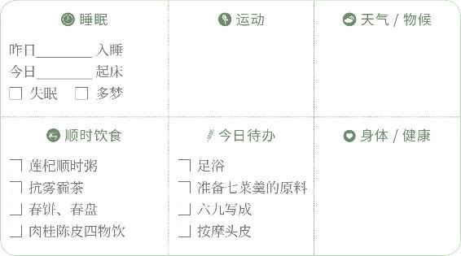
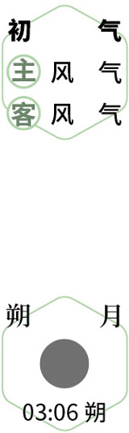
纳福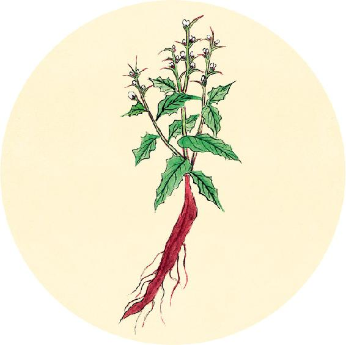
二候反思
这几天是否有过以下情况？
过食油腻 □ 是 □ 否
喝酒过量 □ 是 □ 否
酒后肠胃不适 □ 是 □ 否
以上任何一个答“是”，再多喝几天川陈枳椇四物饮（做法见5月18日），可以调理暴饮暴食后的肠胃问题，开胃消食，预防酒精性脂肪肝。
头痛巅疾，下虚上实，过在足少阴、巨阳，甚则入肾。
——黄帝内经·素问·五脏生成论
拜年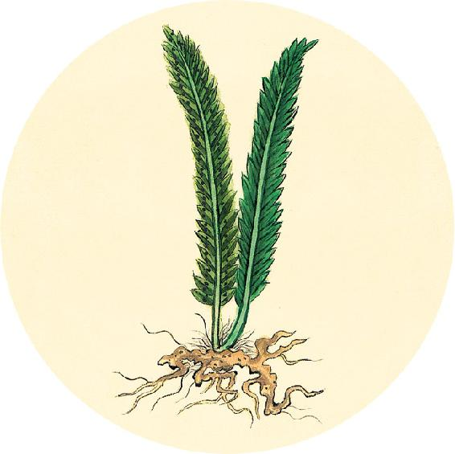
健康提示
花店里漂亮的观赏玫瑰，其实是观赏月季（不是药用月季）。真正的食用玫瑰每年只在初夏时开一季，它的花期短，容易脱落，不适宜做观赏用的切花。
玫瑰的作用：健脾养血、疏肝理气、养颜、淡化斑点、解忧郁。
月季的作用：疏肝理气、活血止痛、调理月经、祛斑。
【释义】头痛等头部疾病，属于身体下面正气虚，上面有实邪，问题出在足少阴和太阳，病势加剧则会入肾。
贺新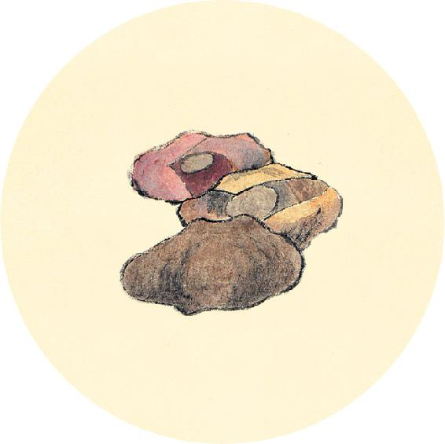
节日食方
大年初七是传统的“人日”，要喝七菜羹或七菜粥。古人也把它叫作“七宝羹”，有祈愿健康长寿的意思。
冬春之交食用七菜羹，有助于升阳排浊、抗病毒。
今年可以多放荠菜、葱叶、桑叶，祛陈寒，预防鼻炎、关节炎。
这个时节北方的新鲜蔬菜较少，可以用桑叶代替。桑叶既是保健茶，又是营养丰富的食物。
徇蒙招尤，目冥耳聋，下实上虚，过在足少阳、厥阴，甚则入肝。
——黄帝内经·素问·五脏生成论
问安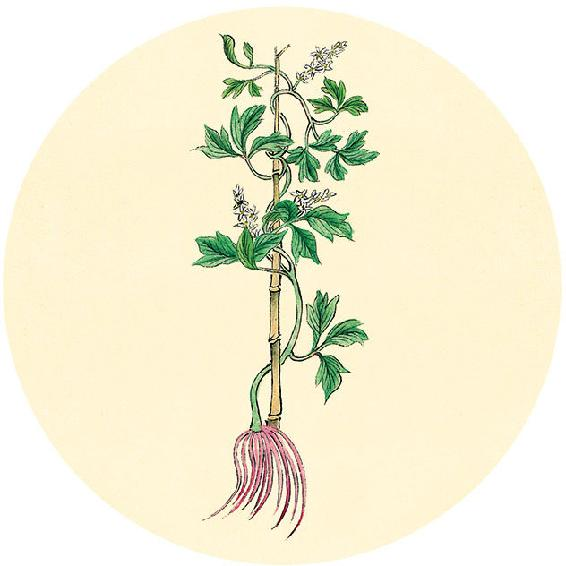
健康提示
后天进入雨水节气。
1.凉拌青韭芽
原料：绿豆芽、嫩韭菜、生姜、紫苏子。
2.人日七菜羹/七菜粥
原料：荠菜、葱叶、桑叶等辛味蔬菜任选7种。
3.节气养生茶
原料：陈皮、竹茹、霜桑叶。
4.元宵节自制汤圆
原料：糯米、大米、花生、橘皮糖或红糖、椰子油。
5. 辛丑岁初气保健方：肉桂陈皮四物饮（从大寒吃到春分前日，做法见3月12日）
原料：肉桂、陈皮、柠檬、麦芽糖。
6.辛丑岁全年保健粥（做法见2月11日）
原料：枸杞子、莲子、炒荷叶、川陈皮、茯苓、粥料。
【释义】头晕目眩、视物不清、听力减退，属于身体下面有实邪，上面正气虚，问题出在足少阳和厥阴，病势加剧则会入肝。
迎福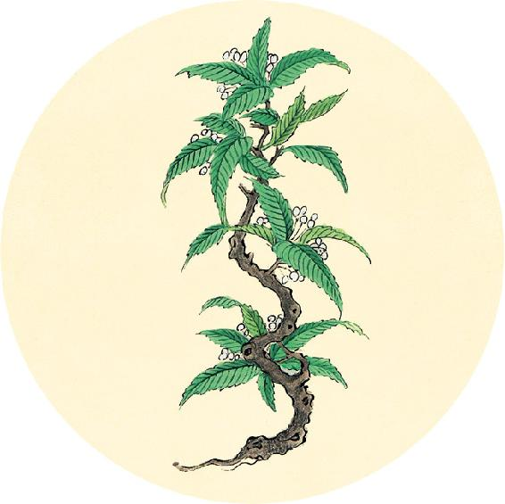
节气总结备
1. 是否每天都吃了辛味的蔬菜 □ 是 □ 否
2. 喝肉桂陈皮四物饮的次数________
3. 喝莲杞顺时粥的次数________
4. 身体哪些方面有改善________________________________________
如果1回答为“否”，请在整个春季常吃荠菜、蒲公英根、牛蒡，茶饮中可以放桑叶。
腹满䐜（chēn）胀，支膈胠（qū）胁、下厥上冒（mào，通“瞀”字），过在足太阴、阳明。
——黄帝内经·素问·五脏生成论
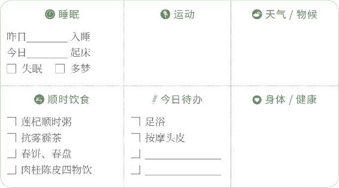
静养